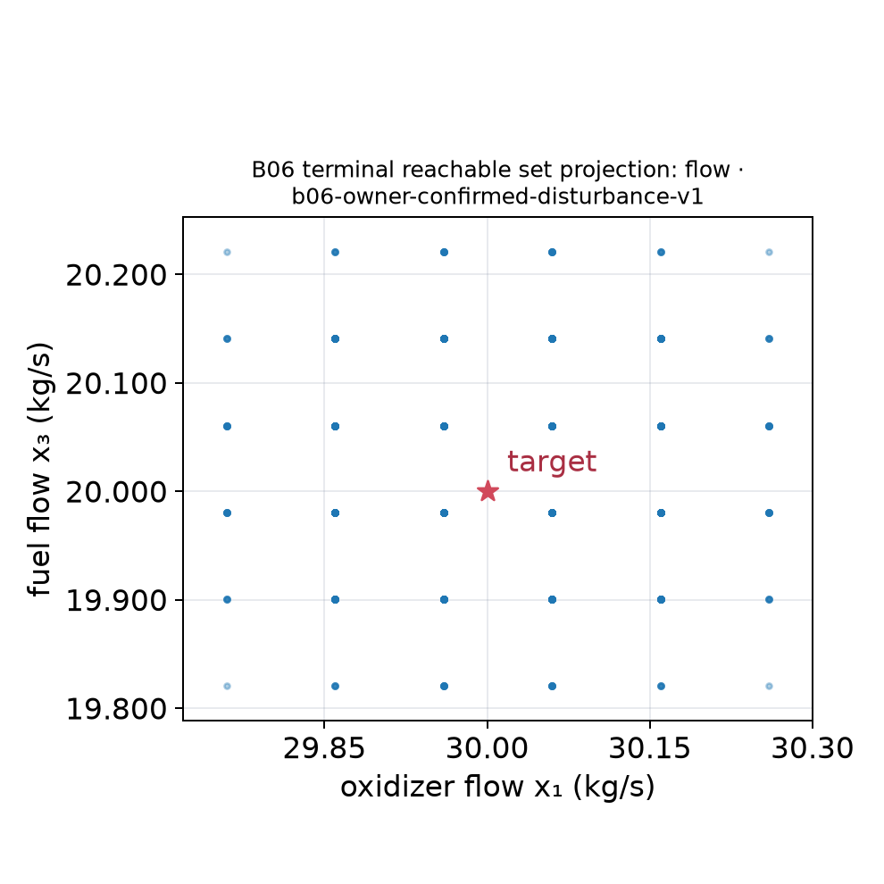
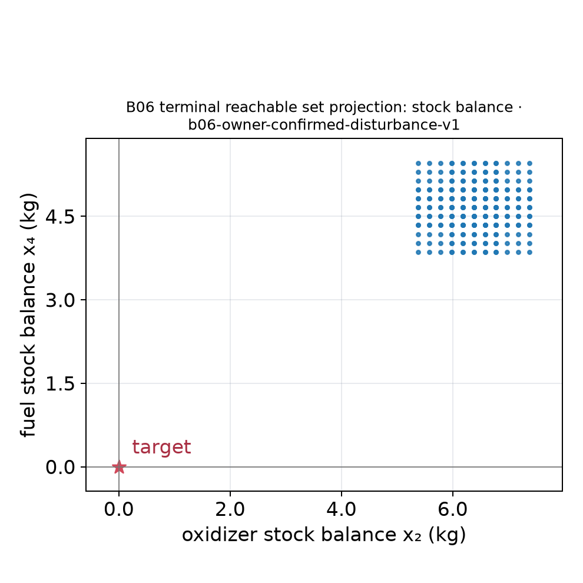
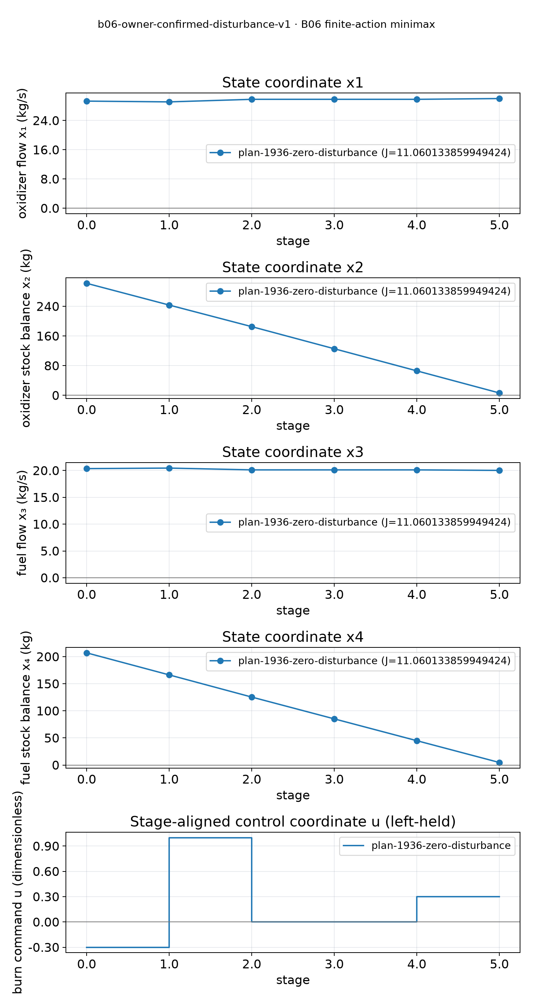
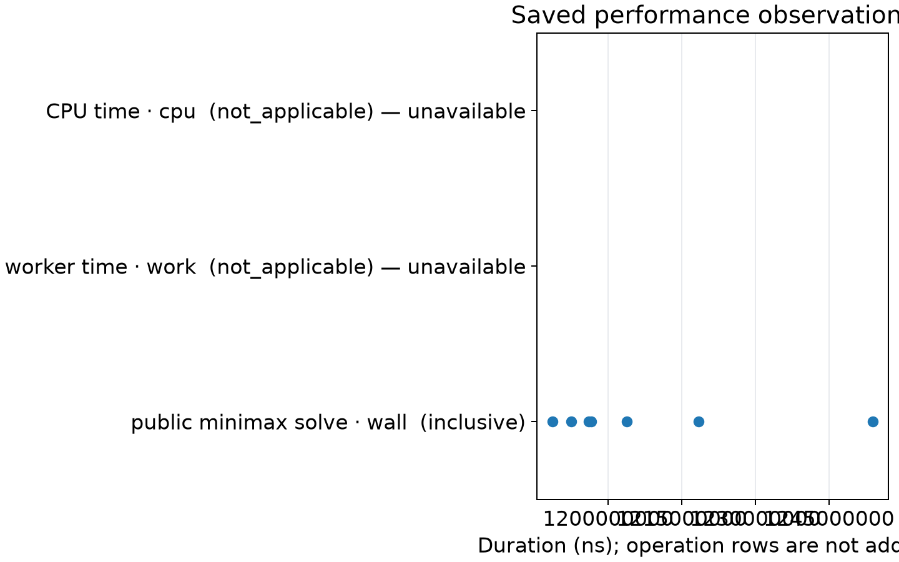
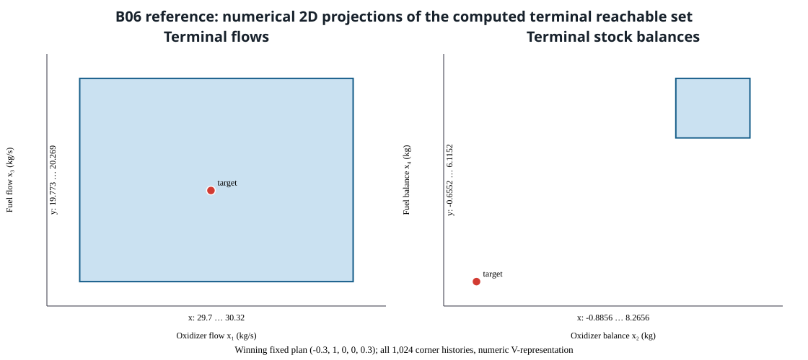

B06 saved numerical record · VIZ-06 readability companion · plot policy csl-report-quantitative-v1
One 4D fuel set,
readable in 2D.
The saved terminal vertices use (x₁,x₂,x₃,x₄) = oxidizer flow, oxidizer stock balance, fuel flow, and fuel stock balance. The figures project those same 1,024 saved vertices onto flow coordinates (x₁,x₃) and stock coordinates (x₂,x₄). Each panel has numeric ticks and major grids; the two axes in each projection use equal data scaling because their units match.
These are saved numerical V-representation points with binary64 solver assurance. They are not validated real-arithmetic enclosures or a reproduction of the historical paper. B06's malformed 15-entry matrix remains recorded and is tracked by issue #668; this visualization does not fix or certify that input.
Method: B06 finite-action minimax, implementation source commit 7df01ba3af5e4c46e867e2d737aca56a8f2461af. The source JSON binds the saved geometry, scenario, and B06 driver by SHA-256.
Download exact plotted values and trajectory (JSON) · Download plot/export receipt · Earlier VIZ-03 companion
Flow projection (x₁,x₃)



Stock projection (x₂,x₄)



One stage-aligned history
This is one zero-disturbance history derived from the saved initial state, control catalogue, and hashed B06 source-driver transition. It is not a captured solver stage trace or the full reachable family. The displayed minimax objective belongs to the saved plan's worst case, not this particular history.



Saved timing observations



Exact-value access
The table summarizes the plotted coordinate ranges and exact saved targets. The downloadable source contains every plotted point, the state-stage rows, and the control intervals.
| Projection | Coordinate | Minimum | Maximum | Target |
|---|---|---|---|---|
| Flow | x₁ oxidizer flow (kg/s) | 29.759999999999994 | 30.26 | 30 |
| x₃ fuel flow (kg/s) | 19.82066666666667 | 20.220666666666663 | 20 | |
| Stock balance | x₂ oxidizer (kg) | 5.3799999999999955 | 7.380000000000024 | 0 |
| x₄ fuel (kg) | 3.8600000000000136 | 5.4599999999999795 | 0 |
The ranges and target are copied from the source JSON generated from saved B06 geometry. The source record contains the complete point list; no geometry was recomputed for this page.
Before: original reference projection
This byte-identical copy of the original figure is provided for an offline visual comparison. The versioned report remains unchanged. Its single SVG has range annotations but no graduated ticks/grid, and holds both panels in one wide image.


ac5997b750ef20fb80c90b46549a1110cf10f7ff37bbb5f9d72ab1cc44461f20. Open immutable original B06 report.Reproduce from saved records
This builds a plot document and renders figures. It does not run a solver, geometry operation, experiment, or benchmark.
python -m venv build/report-env
build/report-env/bin/pip install -r scripts/reports/requirements.txt
build/report-env/bin/python scripts/reports/adapt_fuel_record.py b06 \
reports/algorithm-results/b06-owner-confirmed-7df01ba3af5e4c46 build/fuel-b06.plot.json
build/report-env/bin/python scripts/reports/control_figures.py \
--input build/fuel-b06.plot.json --style scripts/reports/styles/control-v1.json \
--out build/fuel-b06-viz06